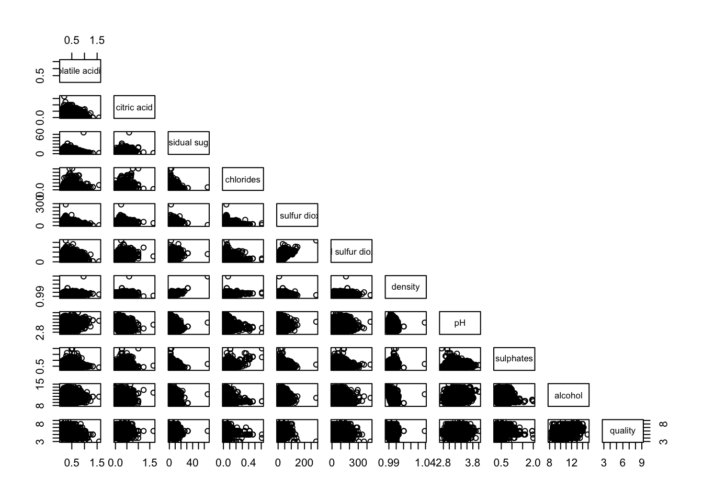
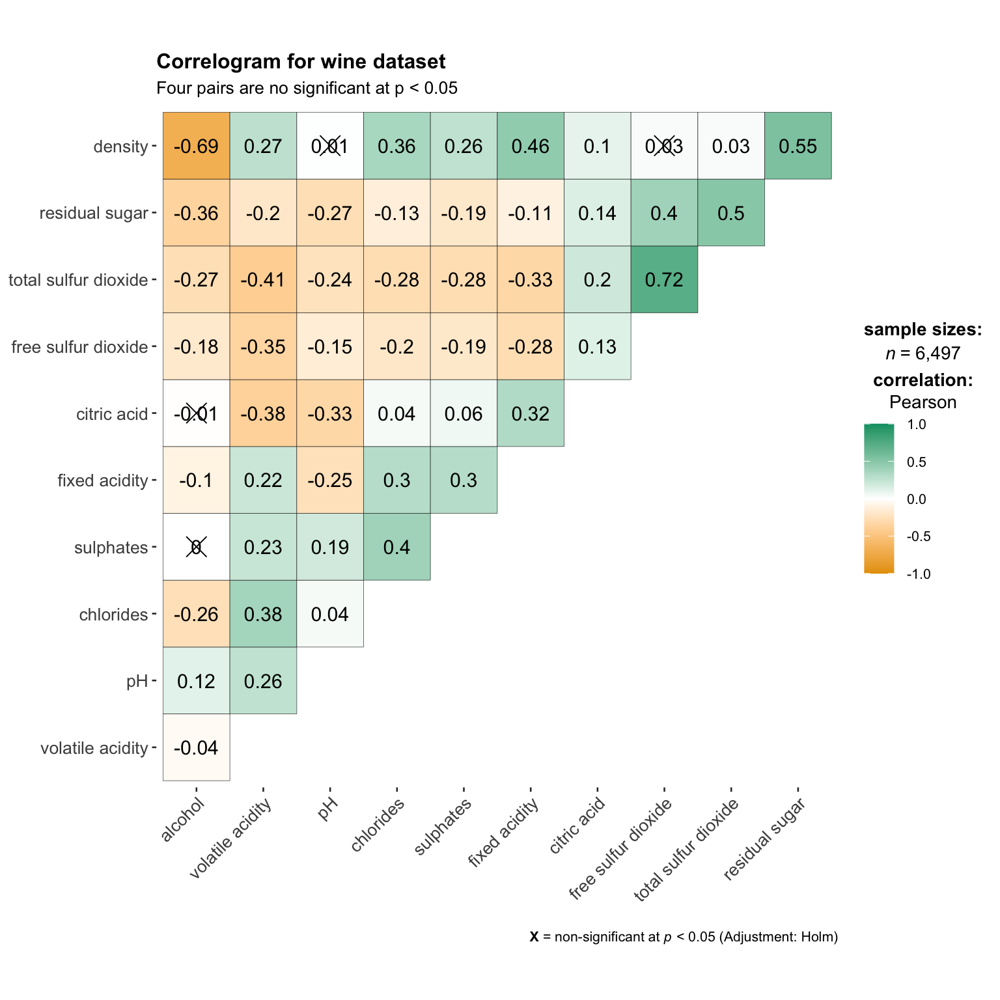
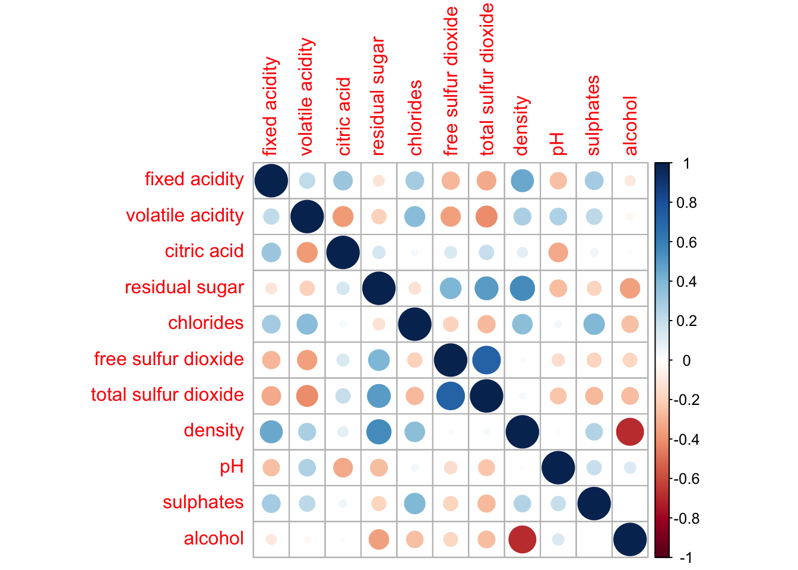
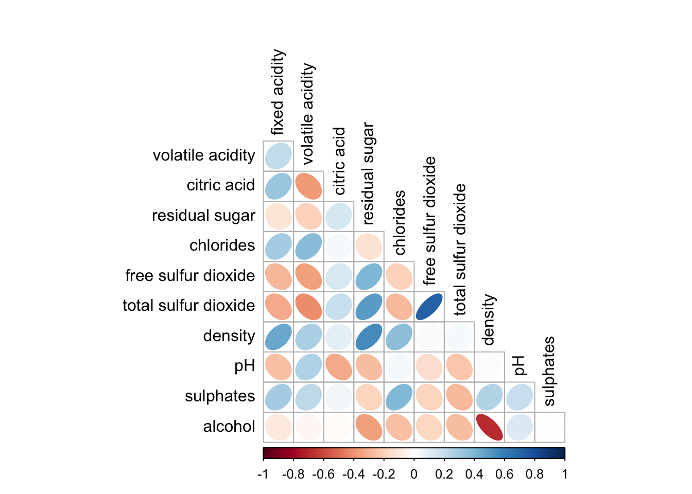
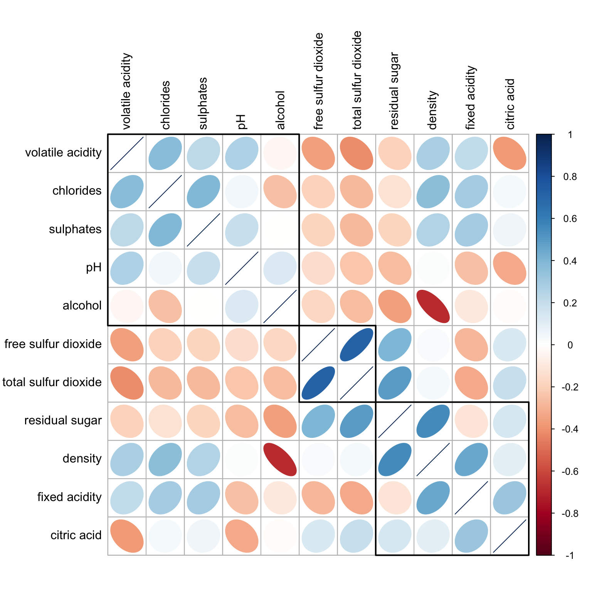

pacman::p_load(corrplot, tidyverse, ggstatsplot,ggcormat)exercise5
load library
read data
wine <- read_csv("data/wine_quality.csv")basic correlation matrix
pairs(wine[,1:11])
pairs(wine[,2:12])showing corners
pairs(wine[,2:12], upper.panel = NULL)
pairs(wine[,2:12], lower.panel = NULL)
including with correlation coefficient
panel.cor <- function(x, y, digits=2, prefix="", cex.cor, ...) {
usr <- par("usr")
on.exit(par(usr))
par(usr = c(0, 1, 0, 1))
r <- abs(cor(x, y, use="complete.obs"))
txt <- format(c(r, 0.123456789), digits=digits)[1]
txt <- paste(prefix, txt, sep="")
if(missing(cex.cor)) cex.cor <- 0.8/strwidth(txt)
text(0.5, 0.5, txt, cex = cex.cor * (1 + r) / 2)
}
pairs(wine[,2:12],
upper.panel = panel.cor)
with ggcormat
basic
ggstatsplot::ggcorrmat(
data = wine,
cor.vars = 1:11)ggstatsplot::ggcorrmat(
data = wine,
cor.vars = 1:11,
ggcorrplot.args = list(outline.color = "black",
hc.order = TRUE,
tl.cex = 10),
title = "Correlogram for wine dataset",
subtitle = "Four pairs are no significant at p < 0.05"
)
multiple plots
grouped_ggcorrmat(
data = wine,
cor.vars = 1:11,
grouping.var = type,
type = "robust",
p.adjust.method = "holm",
plotgrid.args = list(ncol = 2),
ggcorrplot.args = list(outline.color = "black",
hc.order = TRUE,
tl.cex = 10),
annotation.args = list(
tag_levels = "a",
title = "Correlogram for wine dataset",
subtitle = "The measures are: alcohol, sulphates, fixed acidity, citric acid, chlorides, residual sugar, density, free sulfur dioxide and volatile acidity",
caption = "Dataset: UCI Machine Learning Repository"
)
)Corplot
wine.cor <- cor(wine[, 1:11])corrplot(wine.cor)
change geometrics
corrplot(wine.cor,
method = "ellipse") 
corrplot(wine.cor,
method = "ellipse",
type="lower")
corrplot(wine.cor,
method = "ellipse",
type="lower",
diag = FALSE,
tl.col = "black")
mixed layout
corrplot.mixed(wine.cor,
lower = "ellipse",
upper = "number",
tl.pos = "lt",
diag = "l",
tl.col = "black")significant test
wine.sig = cor.mtest(wine.cor, conf.level= .95)
corrplot(wine.cor,
method = "number",
type = "lower",
diag = FALSE,
tl.col = "black",
tl.srt = 45,
p.mat = wine.sig$p,
sig.level = .05)reorder
corrplot.mixed(wine.cor,
lower = "ellipse",
upper = "number",
tl.pos = "lt",
diag = "l",
order="AOE",
tl.col = "black")reorder with hclust
corrplot(wine.cor,
method = "ellipse",
tl.pos = "lt",
tl.col = "black",
order="hclust",
hclust.method = "ward.D",
addrect = 3)
Ternary
pacman::p_load(ggtern, plotly, tidyverse)imoprt data
pop_data <- read_csv("data/respopagsex2000to2018_tidy.csv") prepare data
agpop_mutated <- pop_data %>%
mutate(`Year` = as.character(Year))%>%
spread(AG, Population) %>%
mutate(YOUNG = rowSums(.[4:8]))%>%
mutate(ACTIVE = rowSums(.[9:16])) %>%
mutate(OLD = rowSums(.[17:21])) %>%
mutate(TOTAL = rowSums(.[22:24])) %>%
filter(Year == 2018)%>%
filter(TOTAL > 0)ternary disgram
ggtern(data=agpop_mutated,aes(x=YOUNG,y=ACTIVE, z=OLD)) +
geom_point()ggtern(data=agpop_mutated, aes(x=YOUNG,y=ACTIVE, z=OLD)) +
geom_point() +
labs(title="Population structure, 2015") +
theme_rgbw()interative ternary diagram
label <- function(txt) {
list(
text = txt,
x = 0.1, y = 1,
ax = 0, ay = 0,
xref = "paper", yref = "paper",
align = "center",
font = list(family = "serif", size = 15, color = "white"),
bgcolor = "#b3b3b3", bordercolor = "black", borderwidth = 2
)
}
axis <- function(txt) {
list(
title = txt, tickformat = ".0%", tickfont = list(size = 10)
)
}
ternaryAxes <- list(
aaxis = axis("Young"),
baxis = axis("Active"),
caxis = axis("Old")
)
plot_ly(
agpop_mutated,
a = ~YOUNG,
b = ~ACTIVE,
c = ~OLD,
color = I("black"),
type = "scatterternary"
) %>%
layout(
annotations = label("Ternary Markers"),
ternary = ternaryAxes
)heatmap
library and data
pacman::p_load(seriation, dendextend, heatmaply, tidyverse)
wh <- read_csv("data/WHData-2018.csv")
row.names(wh) <- wh$Countrydataframe to matrix
wh1 <- dplyr::select(wh, c(3, 7:12))
wh_matrix <- data.matrix(wh)static heatmap
The arguments Rowv=NA and Colv=NA are used to switch off the option of plotting the row and column dendrograms
wh_heatmap <- heatmap(wh_matrix,
Rowv=NA, Colv=NA)default
wh_heatmap <- heatmap(wh_matrix)